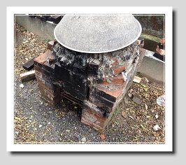
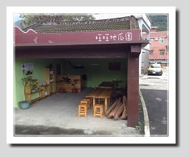

FIELD JOURNAL / 2015 專題紀錄
把農事，變成一起參與的體驗。
2015 原專題訪談紀錄：聽地瓜園園主分享農事、體驗活動與產品發展的故事。

從地瓜田出發的轉變
為了了解金山地瓜是否為地方開拓了新商機，我們特地採訪「旺旺地瓜園」的業主賴先生，進一步認識以地瓜為主的休閒產業現況與未來發展。賴先生原本在電子業上班，因為住在金山的母親忙不過來，農忙時節的假日就得回家幫忙。
在產業界工作的賴先生靈機一動，決定試著把地瓜放上網路拍賣，而且賣的是還種在土裡的地瓜，因為採收期根本找不到工人。隨著時代改變，台灣的休閒產業愈來愈盛行體驗經濟，許多都市來的遊客想親手挖地瓜，賴先生的地瓜拍賣因此獲得廣大迴響，愈來愈多遊客來到地瓜園挖地瓜。


從採收到體驗，換一種經營方式。
這樣的經營模式為賴先生一家帶來不錯的收入。原本自己採收的地瓜要交給菜販或盤商，還得分級銷售，每個等級價格不同，瑕疵品更要自行吸收；改為遊客體驗後，販售的不只是地瓜，更多是消費者想被滿足的體驗需求，地瓜自然不再需要論等級計價。為了滿足更多需求，他又發展出「焢窯」，讓來訪的遊客有更多體驗選擇。
發展焢窯的契機來自金山甘藷節。不過甘藷節使用的是傳統「土窯」，堆窯的土都不是金山在地的土，活動結束後這些土塊留在金山，與在地土壤混合，改變了土質；在改變過的土地上種出來的地瓜，收成與品質多少都會受影響。因此，站在地瓜農的立場，賴先生不希望在自己的田裡使用土窯。
此外，土窯的製作成本高，堆窯過程又需要專人在旁指導；遊客一多，業者可能應付不來，若增派人力，轉嫁到消費者身上的費用也會提高。為了兼顧不增加人力成本、降低土窯的高成本，以及保護金山地瓜的土地，賴先生決定研發可以永續使用的「磚窯」。磚窯除了這三個好處，還能服務更多元的客層，例如幼兒園、小學生等團體，就不適合用土窯體驗焢窯。


從農忙到農閒，延伸地方體驗。
旺旺地瓜園目前正陸續完成硬體設備，也會規劃更多元的體驗活動：種植期讓遊客體驗種地瓜，採收期則體驗挖地瓜和焢窯。那麼農閒時期呢？賴先生再次發揮科技人的資訊素養，讓地瓜以另一種風貌登場──「薄暮田原」就此誕生。
